someshiit 山姆以結合樂團編制的臥室饒舌見長。首支 demo〈那些勸我別抽菸的人都死了〉累積逾538萬次觀看，首張專輯《愚公》為他奪下金曲36屆最佳新人。他參與大港開唱、浪人祭等大型音樂節，並曾與洪佩瑜、maco marets、CHS等海內外樂人合作。自2023發行EP《往而不返》、2024推出《愚公》，2025將重製出道作，持續以細膩詞作與樂團聲響拓展台灣饒舌邊界。
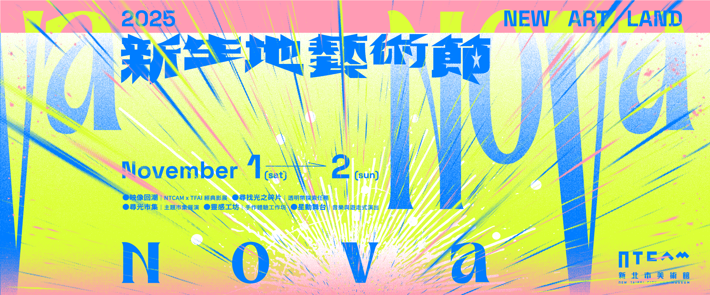

「新生地藝術節 NOVA NOVA」呼應新北市美術館自今春開館以來「立基在地，面向國際」的定位。美術館所在的三鶯地區，是文化、工藝與自然共生的沃土，而新北市美術館的誕生，正如這片土地在文化層面的再一次能量聚合與爆發，坐落於鶯歌溪畔「新生之地」中誕生的新星，迸發潛藏的能量與光芒。
「NOVA NOVA」一詞取自天文學的「新星」（Nova）意象，象徵恆星系統中能量的突然釋放——在短暫時間內以極高亮度閃耀的天體事件。這股能量的迸發，映照著新北市美術館於2025年正式開館後所激發的文化亮度與創造力。我們期許這樣的閃耀不止於一瞬，而能以「新生地藝術節」為恆定的軌跡，每年於入秋之際於鶯歌再度亮起。
透過位於新美聚場以及藝術天臺的各項關於空間、自我、五感以及美學的探索，由美術館策動、透過展覽與公眾活動所串連的多重能量，將如星群般持續閃爍，映照出屬於這座城市的文化星象。
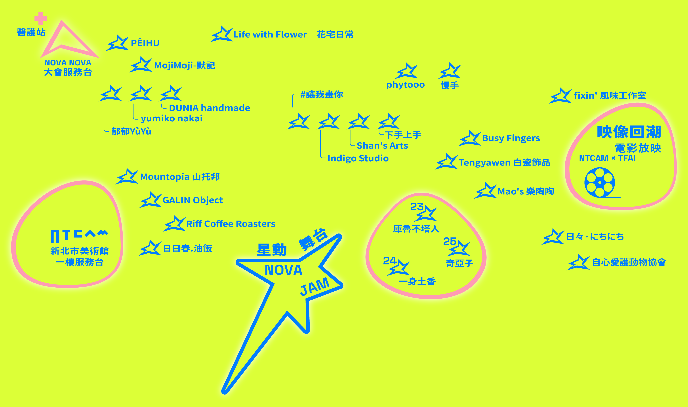
在新北市美術館的每個角落，都藏著一片屬於光的碎片。
跟著直覺前進，讓自己成為那道光的尋者。
任務說明
前往新北市美術館1樓新美聚場與天臺自由探索，
尋找隱藏在空間中的「光之碎片」。
每一片光之碎片都有獨特的圖形與顏色，印著專屬編號，象徵光的座標。
透明幣使用說明
找到一片「光之碎片」，即可至NOVA NOVA大會服務台兌換1枚透明幣。
透明幣可於「尋光市集」攤位中折抵100元消費，每筆消費限用1枚透明幣，且不可找零。
使用時，請將透明幣交給該品牌攤位的工作人員作為折抵，使用後的透明幣將由大會統一回收，無法退還或帶回收藏。
＊一人兌換一枚為限
＊若不使用優惠可將透明幣帶回留念
＊透明幣數量有限，兑完為止。
提示
光的碎片散落在新美聚場（尋光市集）與天臺各處，
當你改變目光的方向，
那些碎光就會聚成屬於你的新星。
小提醒：
光之碎片都藏在新北市美術館開放的公共空間裡（以1樓新美聚場與2樓天臺為主）
不需要進入館內，也不用挖土、翻牆喔！只要多用一點觀察力——也許蹲下來、抬起頭，就能在角落裡發現那道光。
＊實際遊戲規則與藏點安排以主辦單位公告為準，主辦單位保有活動最終解釋權＊
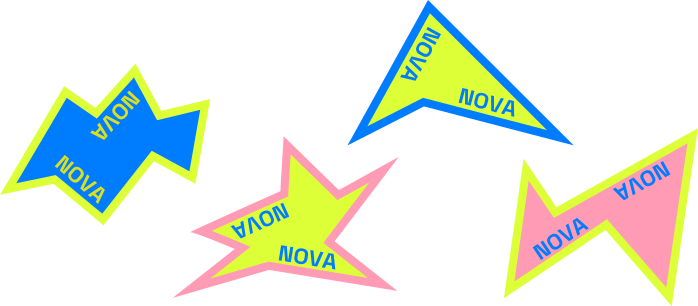
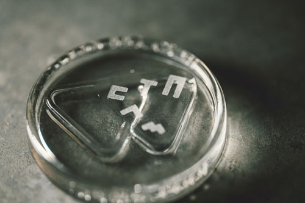
- 星動舞台
- 尋光市集
- 靈感工坊
- 映像回潮
演出者介紹
星動·聲場 / NOVA SOUND
someshiit 山姆
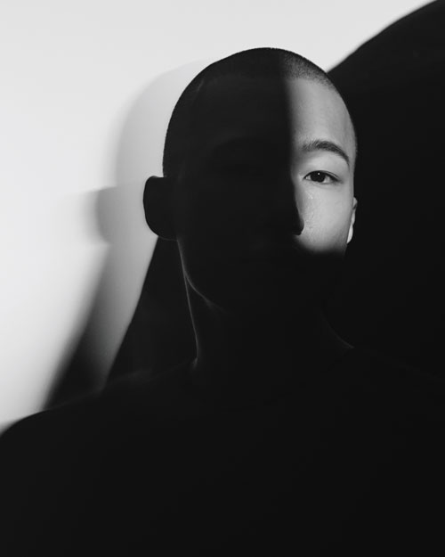
秋波電台
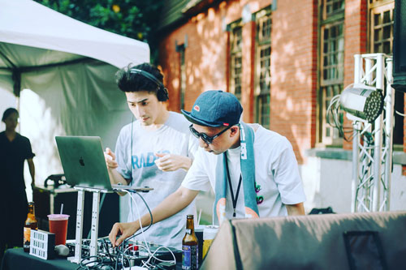
秋波電台是一個非營利的線上網路電台，
主要由Jim與DJ QQ共同主持經營。
2007年受法式電音與Disco/Funk感召，踏上了DJ之旅。
2016年建立了秋波電台，在每個月1~2次的特製節目中播送弛放的音樂；
主旨是為了紓解都市人生活中的壓力，提供大眾不同的收聽選擇與習慣。
在音樂的襯著下提升生活中的品味及美學。
DJ 林貓王

從音樂部落格【音樂是這世界上最美好的事】出發，推廣獨立音樂二十年，從搖滾放到電子樂，從民謠放到靈魂樂，以主題性歌單為特色，如「告白之夜」、「流浪之夜」、「瞪鞋之夜」；曾推出原聲帶企劃，為《王牌冤家》、《戀夏 500日》等電影重新配樂。
十九兩樂團
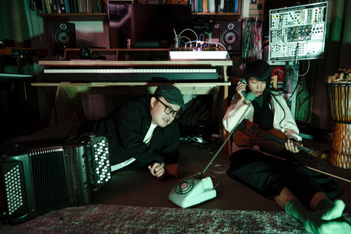
十九兩是由手風琴手阿雞以及小提琴手瑞奇所組成，一開始組以歐式民謠演奏為主，後來開始嘗試在Livehouse演出，演奏的內容嘗試結合說書人的劇場風格在演出中，創作出獨一無二的表演形式。
星動·流形 / NOVA MOTION
星合有限公司
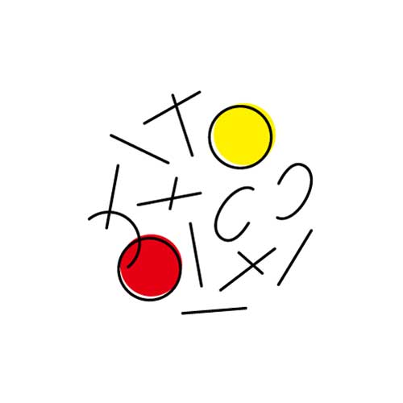
前太陽馬戲團表演者陳星合與串連臺灣及國際馬戲社群的江侑倫共同創辦，致力於馬戲策劃與推廣。以「星光雖然微小，集合起來璀璨無比」的核心精神，匯集海內外馬戲專業，號召各界跨域合作，結合當代人文敘事與美學元素，呈現當代馬戲的多元性以拓展想像。現為 Circostrada 歐洲當代馬戲與戶外藝術聯盟成員、CAN 亞洲馬戲聯盟成員。
Milla Lee
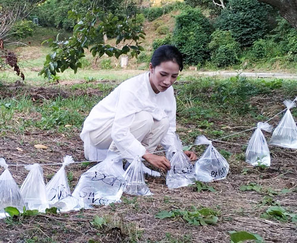
跨領域藝術家，創作橫跨行為藝術、裝置與影像。母親為台灣南島原住民族阿美族，父親為印尼華僑。她以身體作為感知與轉化的媒介，探討歷史創傷、集體記憶與人與自然的連結。
作品展現生態女性主義與解殖視角，回應資本與技術宰制下的身體與感知異化，召喚人類重新與土地、歷史與萬物建立關係。
近年受邀參與台灣、日本、香港與印尼日惹藝術節等地展演與駐村，
代表作品包括《石頭》、《返身自然》、《生之火》、《價值？》與《混沌之息》。
Afra Lin
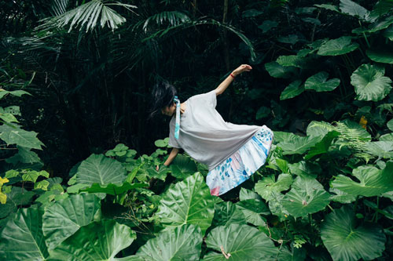
自由創作者，寶藏巖藝術村微型聚落駐村六年，第十屆雲門流浪者，太平洋帆船航行一年半載後，與大地重新展開連結方式，於各地音樂祭及即興接觸舞蹈擔任樂手及舞者，持續行旅採集人間動植物的故事，與自然的能量律動學習。
沛元的聲波療癒室
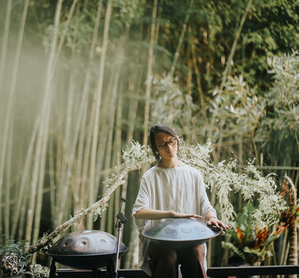
陳沛元 Atisha Chen，以充滿自然療癒觸動心靈的手碟音流、聲波療癒演奏，傳遞能令身心靈平衡轉化的共振能量。在過往音樂修行歷程中，走訪世界學習古老的靈性音樂傳統與瀕臨失傳的神聖樂器，內化成為生命與創作的靈感泉源，並將古老智慧與自然能量轉譯成當代的音藥。
演出時刻表
11/1（六）
11/1（六）
11:30-12:30
秋波電台｜現場 Remix & Chill Set
星動舞台
11/1（六）
13:00-13:15
星合有限公司｜搖搖晃晃輕飄飄
星動舞台
11/1（六）
14:00-15:00
沛元的聲波療癒室｜Atisha’s Sound Healing SPA
星動舞台
11/1（六）
14:00-14:30
星合有限公司｜玩球之外－雜耍工作坊
＊需報名，免費參加＊ 事先報名者請於活動開始10分鐘前至NOVA NOVA大會服務台集合
不定期出沒
11/1（六）
14:30-15:30
Afra Lin｜石牆、迷宮，與展開的身體宇宙
＊需報名，免費參加＊ 事先報名者請於活動開始10分鐘前至NOVA NOVA大會服務台集合
天臺
11/1（六）
15:30-15:45
星合有限公司｜搖搖晃晃輕飄飄
星動舞台
11/1（六）
16:00-16:30
星合有限公司｜玩球之外－雜耍工作坊
＊需報名，免費參加＊ 事先報名者請於活動開始10分鐘前至NOVA NOVA大會服務台集合
不定期出沒
11/1（六）
17:30-18:00
十九兩樂團｜說書人的音樂劇場
星動舞台
11/2（日）
11/2（日）
11:00-12:00
Milla Lee｜共同承載 Carrying Together
天臺
11/2（日）
13:00-13:15
星合有限公司｜搖搖晃晃輕飄飄
星動舞台
11/2（日）
14:00-15:00
林貓王｜百變風格 DJ
星動舞台
11/2（日）
14:00-14:30
星合有限公司｜玩球之外－雜耍工作坊
＊需報名，免費參加＊ 事先報名者請於活動開始10分鐘前至NOVA NOVA大會服務台集合
不定期出沒
11/2（日）
15:30-15:45
星合有限公司｜搖搖晃晃輕飄飄
星動舞台
11/2（日）
17:30-18:00
someshiit 山姆｜2025金曲獎最佳新人
星動舞台
演出工作坊
星合有限公司｜玩球之外－雜耍工作坊
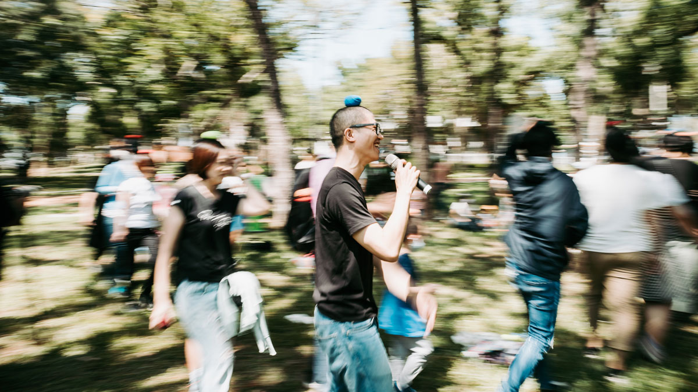
藉由簡單上手的步驟，增強協調也提高自信，發現勇於接受挑戰的自己。
星合有限公司設計適合各年齡層的雜耍體操，在充滿趣味的旋律舒展筋骨，也在每次雜耍拋接累積成就感。歡笑與汗水相伴，球掉了也沒關係，撿起來就好。
活動場次
11/1（六） 14:00-14:30 / 16:00-16:30
11/2（日）14:00-14:30
11/2（日）14:00-14:30
場次數量
共3場
報名方式
線上報名（若報名尚未額滿，將開放現場觀眾報名，請至NOVA NOVA大會服務台詢問。）
報名網址
場次1（11/1｜14:00-14:30）https://forms.gle/nuGg7yuJHd999HEo7
場次2（11/1｜16:00-16:30）https://forms.gle/4QgAe8bcDYjYFyEq6
場次3（11/2｜14:00-14:30）https://forms.gle/smaGzzTpB6EDfz8Z6
場次2（11/1｜16:00-16:30）https://forms.gle/4QgAe8bcDYjYFyEq6
場次3（11/2｜14:00-14:30）https://forms.gle/smaGzzTpB6EDfz8Z6
人數限制
20人
年齡限制
10歲以上
體驗費用
免費參加，一起歡樂舒展筋骨吧！
Afra Lin｜石牆、迷宮，與展開的身體宇宙
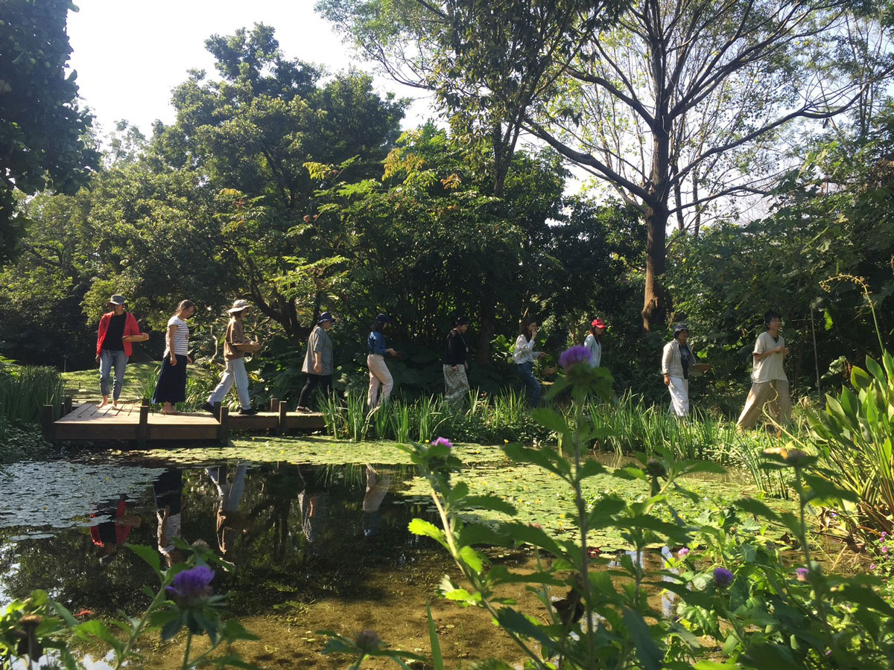
於新美館二樓獨特的天臺場域，連結肢體的內部及外在環境，建築體與自然、堅硬與柔軟、骨骼與肌肉⋯⋯透過步行與身體律動，拓展感知並以肢體自由自在地回應。
活動場次
11/1（六）14:30-15:30
報名方式
線上報名（若報名尚未額滿，將開放現場觀眾報名，請至大會服務台詢問。）
人數限制
12人
體驗費用
免費參加，一起探索身體與空間吧！
*無需任何舞蹈經驗，適合一般民眾，帶著放鬆自在的心情參加即可。
*請穿著舒適移動的衣物，並請將大包包寄放服務台。
探索生活靈感

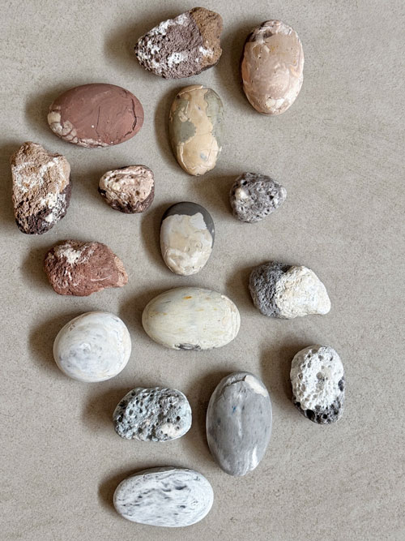
社群連結
MojiMoji-默記
原石擴香石手作體驗課
∎ 開放時間：11/1（六）、11/2（日）13:30-14:00 / 14:30-15:00 / 15:30-16:00
∎ 報名方式：線上報名
∎ 報名網址：https://reurl.cc/VWy43N
∎ 體驗時間：約30mins（請提早10分鐘報到喔！）
∎ 體驗費用：880元（原石造型 擴香石 2顆）
∎ 1人即可上課，每場次4人即滿班。
社群連結
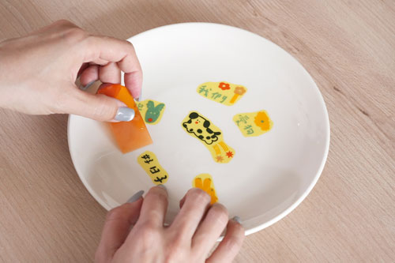
社群連結
Ｍao’s 樂陶陶
陶瓷貼花｜一起創作最有愛的餐桌日常
以「人與動物溫柔相伴」為靈感的陶瓷貼花體驗中，邀請你親手貼出屬於自己的陶瓷作品。現場提供多款可愛圖案與英文字母花紙，讓每一件作品都成為獨一無二的日常風景。
透過陶瓷貼花這個溫柔的工藝過程，感受陶瓷與生活，作品經窯燒後即可日常使用，讓手作的溫度成為日常最有愛的陪伴。
∎ 現場報名，活動詳情請洽品牌
社群連結
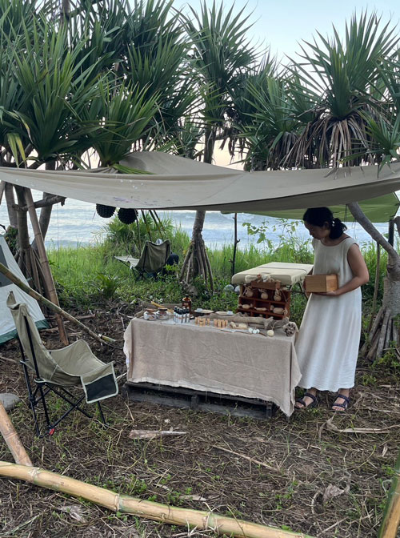
一身土香
香氣按摩療癒工作坊
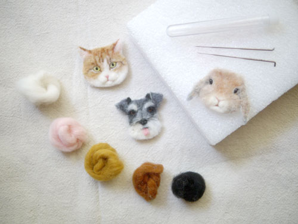
下手上手
羊毛氈動物別針設計工作坊
新北市美術館與國家電影及視聽文化中心攜手合作， 推出【映像回潮：NTCAM × TFAI 經典影展】，邀你一起回味臺灣電影的經典時光。
精選國家影視聽中心的數位修復片單，從充滿童趣的《魔法阿媽》，到刻畫人生細膩情感的《戀戀風塵》與《飲食男女》， 再到描繪在地風景的《淡水暮色》、紀錄節慶人情的《咚咚響的龍船鼓》，以及珍貴的《鄧南光8mm電影》， 每一部作品都將帶領觀眾走進不同時代的生活記憶與文化風景。
當光影回潮，新美館成為承載故事的溫暖場所。 我們希望讓修復後的經典影像，不只是被回顧，更成為與當下生活對話的媒介—— 無論是闔家觀賞、朋友相聚，或是一場與自己靜靜對話的午後， 都能在這裡找到屬於你的一幕好時光。
＊免費入場/可自由進出入座，請互相尊重其他觀影人＊
＊本單元為新北市美術館與國家電影及視聽文化中心共同主辦＊
11/1（六）
11:30-12:50
魔法阿媽
新美聚場 A1空間
11:30-13:22
戀戀風塵
天臺 B2+空間
13:00-15:04
飲食男女
新美聚場 A1空間
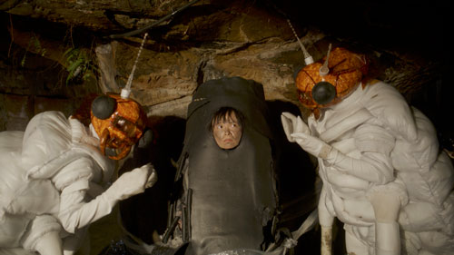
14:00-14:37
張徐展短片集－－ Si So Mi+熱帶複眼+白蟻餵食秀
天臺 B2+空間
15:10-16:53
再見機器人
新美聚場 A1空間
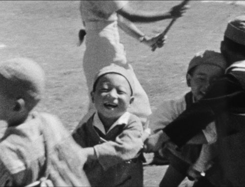
15:30-16:27
鄧南光8mm電影
天臺 B2+空間
17:00-17:50
咚咚響的龍船鼓+淡水暮色
新美聚場 A1空間
17:00-17:37
張徐展短片集－－ Si So Mi+熱帶複眼+白蟻餵食秀
天臺 B2+空間
11/2（日）
11:30-13:13
再見機器人
新美聚場 A1空間
13:00-13:37
張徐展短片集－－ Si So Mi+熱帶複眼+白蟻餵食秀
天臺 B2+空間
13:30-15:22
戀戀風塵
新美聚場 A1空間
14:30-16:34
飲食男女
天臺 B2+空間
15:30-16:07
張徐展短片集－－ Si So Mi+熱帶複眼+白蟻餵食秀
新美聚場 A1空間
16:30-17:50
魔法阿媽
新美聚場 A1空間
17:00-17:37
張徐展短片集－－ Si So Mi+熱帶複眼+白蟻餵食秀
天臺 B2+空間
火車
「臺鐵鶯歌站」下車後，由「文化路」出口至對向「捷運通廊」，步行約6分鐘即可抵達。
公車
⇒ 由桃園、三峽方向前來
【5101線】至「鶯歌火車站」下車，穿越火車站建築後，由文化路出口至對向「捷運通廊」，步行6分鐘即可抵達。
【981 線】至「新北市美術館」站下車。
【幸福巴士F652延伸線】至「陶瓷博物館」站下車，沿館前路步行8分鐘即可抵逹。
⇒ 由臺北、板橋、樹林、土城方向前來
【702線】、【851線】至「鶯歌火車站」下車，穿越火車站建築後，由文化路出口至對向「捷運通廊」，步行6分鐘即可抵達。
【917 線】、【939副線（例假日停駛）】至「新北市美術館」站下車。
⇒ 鶯歌區內公車
【731 陶藝山水環狀線】至「新北市美術館」站下車。
【F653線】、【F656線】至「鶯歌火車站」下車，穿越火車站建築後，由文化路出口至對向「捷運通廊」，步行6分鐘即可抵達。
自行開車 (本場館停車位有限，建請多加利用大眾交通工具)
⇒ 國道2號
八德鶯歌（18大湳）交流道出口往鶯歌方向，順行經鶯桃路、中山路右轉國慶街、文化路左轉 館前路。
⇒ 國道3號
三峽鶯歌（50A 鶯歌）交流道出口往鶯歌方向，經三鶯大橋後右轉館前路。
停車資訊
- 本館位於鶯歌區館前路之附屬停車場計小型車82位、機車26位；例假日計時收費每小時60元，單日上限300元，機車平假日收費每小時10元，單日上限30元。全程1小時計算，未逾半小時者免收費。
-
本停車場車位有限，如遇額滿，可使用鄰近周邊停車場如下:
・ 新北市鶯歌國民運動中心收費停車場(步行距離1分鐘)
・ 嘟嘟房新北美術館站(步行約4分鐘)
・ 礫間停車場(步行約5分鐘)
・ 北鶯平面停車場(步行約5分鐘)
・ 三鶯轉運站南側停車場(步行約5分鐘)
・ 三鶯轉運站北側停車場(步行約5分鐘) -
身障者停車優惠依「身心障礙者專用停車位設置管理辦法」辦理。
欲辦理前項停車優惠，或了解更多交通資訊， 請前往新北市美術館官網查詢。